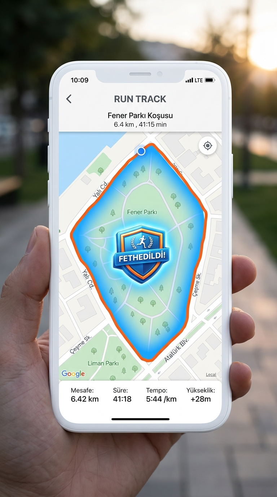

Koş, Çevir, Fethet!
Şehrini koşarak keşfet! Etrafını çevrelediğin her parkı, caddeyi ve bölgeyi Google Maps üzerinde kendi renginle fethet ve haritanın hakimi ol.

Koştukça Bölgen Renklensin
GPS rotan kapalı bir döngü oluşturduğunda, içeride kalan tüm harita alanı otomatik olarak senin renginle kaplanır ve bölgesel skoruna eklenir.
Fenerbahçe Parkı Sektörü
Bu sektör şu anda senin kontrolünde! Koşu temponu koruyarak bölgeni rakiplere karşı savunabilir veya komşu parklara doğru sınırlarını genişletebilirsin.
Nasıl Oynanır?
Sadece 3 adımda şehrini koşu oyun alanına çevir.
1. Koşarak Çevrele
Uygulamayı başlat ve sokaklarda koşarak haritada kapalı bir hat veya poligon oluştur.
2. Haritayı Renklendir
Başlangıç noktasına döndüğünde çevrelenen alan anında senin takım renginle fetheder.
3. Alanını Koru & Genişlet
Diğer koşucular senin bölgenin etrafından koşarak alanını ele geçirmeye çalışır. Bölgeni koru!
Şehir Liderlik Tablosu
En çok alan fetheden koşucular ve haftalık bölge savaşları puan durumu.